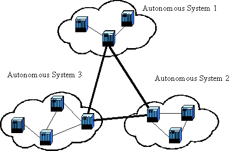
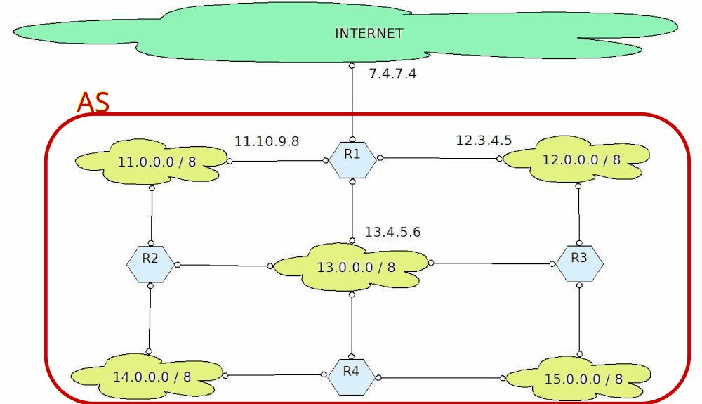

Routing
Se dobbiamo occuparci di routing, significa che siamo già... in viaggio! Infatti il routing, l'instradamento, la scelta del percorso va effettuata per tutti quei pacchetti che secondo la logica di base del protocollo IP sono stati inviati al default gateway, ovvero il primo dispositivo in grado di fare routing e che si occupa di gestire quei pacchetti il cui indirizzo di destinazione appartiene ad una rete diversa da quella dell'indirizzo del mittente.
Lasciatemi dire che il routing è praticamente quell'arte magica che riesce ad indirizzare ogni pacchetto verso la sua destinazione.
Magia, non c'è un altro termine. Noi proveremo però a capire il trucco...
Intanto diciamo che il routing rappresenta il "grosso" del lavoro nel trasferimento di un pacchetto dal mittente A al destinatario B. Per spiegare questo concetto possiamo prendere ad esempio la trasmissione di una lettera. Il mittente la scrive, la indirizza e la spedisce, mettendola in una cassetta della posta. Al massimo il mittente avrà dunque contatti col postino incaricato di raccogliere la posta da quella cassetta. Tutto il trasferimento organizzato dalle poste (camion, treno, aereo, etc.) non lo coinvolge assolutamente. Il destinatario si trova la lettera nella propria cassetta della posta. E anche qui, al massimo egli avrà rapporti col postino (in motorino) incaricato di consegnargliela.
Capito più o meno cosa si intende per routing adesso vogliamo capire: chi se ne occupa? E come? Fisicamente il routing viene effettuato dai router, i dispositivi del livello di rete che organizzano la rete stessa. E come fanno? Ci riescono grazie a due concetti fondamentali, di cui parleremo a breve:
- il routing gerarchico
- le tabelle di routing
Routing gerarchico
Considerando il numero incredibile di reti diverse presenti su internet con IPv4 (oltre 2 milioni di reti), come è possibile realizzare questa incredibile magia della tecnologia, del pensiero e dell'informatica che è l'instradamento globale?

La risposta sta nell'organizzazione imposta alla rete da ICANN. Questa organizzazione ha strutturato Internet in maniera gerarchica tramite l'assegnazione delle reti IP agli ISP (Internet Service Provider).
Gli ISP organizzano il territorio ove si estende la propria rete e ove sono situati i loro clienti in maniera autonoma. ICANN definisce queste entità amministrative locali come Sistemi Autonomi (AS), ovvero gruppi di router e reti sotto il controllo di una singola e ben definita autorità amministrativa.
Ogni Sistema Autonomo sulla rete Internet è identificato da un numero a 16 bit (ASN, AS number).
Il routing realizzabile grazie a questi AS si definisce routing gerarchico ed avviene su 2 diversi livelli:
- Routing Interno al Sistema Autonomo, in cui si utilizzano protocolli di tipo IGP (Interior Gateway Protocol): ogni AS può scegliere quello che preferisce.
- Di collegamento tra Sistemi Autonomi, in cui si utilizza un unico protocollo di tipo EGP (Exterior Gateway Protocol): non voglio togliervi la suspence e anticiparvi il nome...
Ipotizziamo ad esempio di voler inviare un pacchetto dall'Italia agli Stati Uniti, che appartengono ovviamente a Sistemi Autonomi diversi; il pacchetto viene inviato procedendo secondo i seguenti livelli di routing:
- routing interno al sistema autonomo dove si trova il mittente (molto più ristretto di un routing globale)
- routing esterno ai sistemi autonomi (eseguito considerando gli AS come punti della mappa), per portare il pacchetto dall'AS del mittente a quello del destinatario.
- routing interno al sistema autonomo del destinatario
Il pacchetto che è partito dal nostro dispositivo in Italia e di cui attualmente sappiamo solo aver raggiunto il default Gateway verrà analizzato dal primo router in cui capita che si domanderà semplicemente: l'IP del destinatario è in una rete che conosco? (ovvero è all'interno del mio AS?) No. Allora lo mando verso l'esterno del Sistema Autonomo.
Arrivato all'esterno del sistema autonomo, i router analizzeranno il pacchetto guardando il suo indirizzo di destinazione e si chiederanno: In quale AS si trova questo indirizzo? Portiamolo lì.
Arrivato nel Sistema Autonomo del destinatario, lì dovranno sapere precisamente come raggiungere la rete di appartenenza dell'IP del destinatario. Arrivati ad un dispositivo della stessa si potrà procedere al mittente vero e proprio individuandolo ancora tramite ARP.
Non è facile, è quasi magia. Ma è la modalità più semplice in cui sono riuscito a spiegarlo. La prossima lezione accanitevi nelle domande :)
Tabelle di Routing
Quando un pacchetto arriva su un router, questo consulta una tabella per capire dove indirizzarlo per il prossimo "salto". E poi ce lo spedisce. Semplice e veloce. Il routing, ovvero la scelta del percorso da effettuare (o almeno del prossimo "pezzo" del percorso) si fa consultando le tabelle di routing. I protocolli di routing intervengono per la creazione delle tabelle di routing, non per il routing vero e proprio!
Ogni spostamento da un router ad un altro viene definito salto, un hop. Ogni salto diminuisce (di uno) il TTL (Time To Live) di un pacchetto.
Una tabella di routing è costituita da almeno 3 campi:
- l'identificativo della rete di destinazione (tipicamente, un network address)
- la Subnet Mask utilizzata per definire la rete di destinazione
- il gateway per la destinazione finale (next hop)
Vediamo un esempio:
| Network | Mask | Gateway |
|---|---|---|
| 100.0.0.0 | 255.0.0.0 | 100.100.1.75 |
| 170.50.0.0 | 255.255.0.0 | 200.200.2.150 |
| 200.150.100.0 | 255.255.255.0 | 150.150.150.150 |
Ricapitolando: un pacchetto arriva su un router con la tabella di routing qui sopra.
Si diminuisce di 1 il suo TTL e lo si controlla: se è zero, il pacchetto viene eliminato.
Si controlla il suo indirizzo IP di destinazione per cercare di capire verso quale destinazione inviarlo. La tabella si legge dalla prima all'ultima riga (l'ordine è fondamentale). La prima riga che soddisfa il pacchetto viene utilizzata. Se nessuna riga coincide con la sua destinazione, il pacchetto viene eliminato.
Per determinare la destinazione di un pacchetto si prende la prima riga e si applica la subnet mask all'indirizzo di destinazione del pacchetto. Si ottiene un indirizzo di rete. Se questo coincide con l'indirizzo di rete indicato nella prima riga si procede all'invio verso il gateway corrispondente. Altrimenti si procede alla riga successiva. Come dicevo prima, se finiscono le righe senza trovare una destinazione si elimina il pacchetto.
Come si mettono d'accordo i due concetti principali che abbiamo appena illustrato, ovvero routing gerarchico e tabelle di routing?
Proverò ancora a spiegare la questione con un esempio. Immaginate che un AS gestisca al suo interno 5 reti come nella figura sotto. Tutto il resto è considerato esterno al Sistema Autonomo.

Allora la tabella di routing del router indicato come R1 sarà così:
| Network | Mask | Gateway |
|---|---|---|
| 11.0.0.0 | 255.0.0.0 | 11.10.9.8 |
| 12.0.0.0 | 255.0.0.0 | 12.3.4.5 |
| 13.0.0.0 | 255.0.0.0 | 13.4.5.6 |
| 14.0.0.0 | 255.0.0.0 | 11.10.9.8 |
| 15.0.0.0 | 255.0.0.0 | 12.3.4.5 |
| 0.0.0.0 | 0.0.0.0 | 7.4.7.4 |
Se il pacchetto è destinato ad una delle reti elencate nelle prime 5 righe utilizza il gateway indicato. Altrimenti viene indirizzato dall'ultima riga (qualunque indirizzo a cui viene applicata la maschera 0.0.0.0 diventa 0.0.0.0) verso il gateway 7.4.7.4 ovvero sparato in uscita dal Sistema Autonomo.
Algoritmi di routing
Gli algoritmi utilizzati per il routing dinamico si dividono in due categorie:
Algoritmi DISTANCE-VECTOR
Basati sul vettore delle distanze.
Utilizzano l'algoritmo Bellman-Ford.
Calcolano la distanza dai router vicini secondo una metrica e la comunicano a ognuno di essi; man
mano che le informazioni si divulgano, i router calcolano la distanza con i nuovi router che
prima non conoscevano e si crea tutta la tabella di routing.
Algoritmi LINK-STATE
Basati sullo stato del collegamento.
Utilizzano l'algoritmo di Dijkstra.
Tutti i nodi si scambiano informazioni sul costo dei collegamenti coi vicini tramite multicast.
Quando ogni nodo ha ricevuto tutte le informazioni, usa l'algoritmo per determinare il
cammino minimo per raggiungere ogni nodo, ponendo se stesso come radice dell'albero dei cammini
minimi.
Il protocollo RIP
RIP (Routing Information Protocol) è un protocollo IGP di tipo distance-vector pubblicato nel 1988 con l'RFC 1058 e revisionato con terrificante regolarità negli anni successivi; ha avuto una grandissima diffusione fino a quando non e stato messo a punto OSPF, protocollo di tipo link-state, standard attuale per il routing fra gateway interni.
RIP impiega il conteggio dei numeri di salti (hop count) come metrica di routing. Il massimo numero di hop permessi è 15. Ogni router RIP trasmette di default, ogni 30 secondi, la propria tabella completa di routing a tutti i vicini direttamente collegati, generando grande traffico dati, spesso inutile per la staticità di molte reti
Il protocollo OSPF
OSPF (Open Shortest Path First) è un protocollo IGP di tipo link-state basato su uno standard aperto (OSPF 2.0, RFC 2178, anno 1997) che è in grado di adattarsi velocemente ai cambiamenti di topologia e supportare vari tipi di metriche, ad un costo però non nullo per la rete.
Le informazioni di modifica dello "stato del collegamento" vengono inviate in multicast a tutti i router della rete gestita tramite esso, aggiornando (continuamente) lo stato complessivo della rete.
Il protocollo BGP
BGP (Border Gateway Protocol) è il protocollo EGP di tipo distance-vector che agisce nel "cuore" di Internet, la cui prima versione ufficiale è datata 1990, con l'RFC 1267.
Viene utilizzato per scambiare informazioni fra i router che appartengono a sistemi autonomi distinti (i cosiddetti gateway routers) da cui il nome del protocollo.
Si tratta di un protocollo di routing ad indicazione di percorso che non si basa su metriche o algoritmi tecnici per l'indicazione del percorso, ma agisce basandosi su regole specifiche definite su ciascun sistema autonomo da accordi politici fra i vari "proprietari" (o forse dovevo scrivere "gestori"?) dei sistemi autonomi.